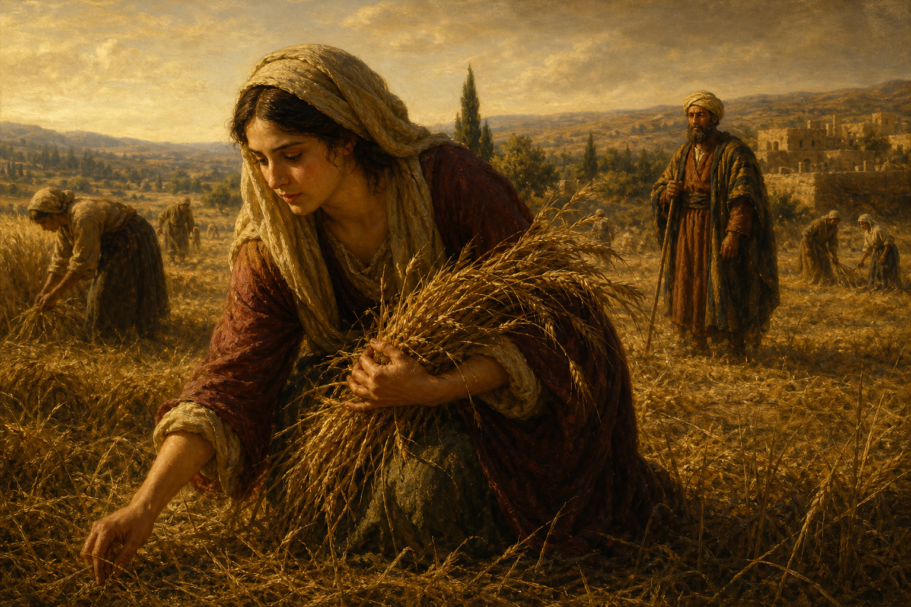

Old Testament · Book 8 of 39
Ruth
In the middle of a dark chapter for Israel, a small story of loyalty and quiet faithfulness points forward to a king.
Ruth is a small, quiet book that happens during the loud, chaotic years of the Judges, and it is no less important for its size.
Whither thou goest, I will go; and where thou lodgest, I will lodge: thy people shall be my people, and thy God my God.
What happens in Ruth
A famine drives a family from Bethlehem to Moab, where tragedy strikes and a widow named Naomi is left with two widowed daughters-in-law. When Naomi decides to return home, one daughter-in-law, Ruth, refuses to leave her, choosing Naomi's people and Naomi's God over the comfort of her own homeland. Back in Bethlehem, destitute and gleaning leftover grain to survive, Ruth catches the attention of Boaz, a kinsman of Naomi's late husband, whose kindness toward her goes well beyond what the law required. Through the ancient custom of the kinsman-redeemer, Boaz takes on the responsibility of restoring Naomi's family line, marries Ruth, and together they have a son named Obed — who will become the grandfather of King David.
Why it matters
Ruth is a story about ordinary faithfulness in an unfaithful age, and about a God who notices loyalty shown in obscurity. A Moabite widow with nothing to offer becomes, through simple steadfast love, part of the family line that leads to David, and ultimately to Jesus — a quiet reminder that God writes His biggest stories through the smallest, most overlooked acts of devotion.